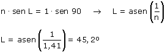

b)
 |
El ángulo límite es el ángulo de incidencia al que corresponde un ángulo de refrac-ción de 90º (Esta situación sólo es posible cuando la luz pasa de un medio lento a otro rápido)  Un rayo que incida con ángulo mayor de 45.2º se reflejará y no pasará al otro lado aunque la superficie de separación entre medios sea transparente |